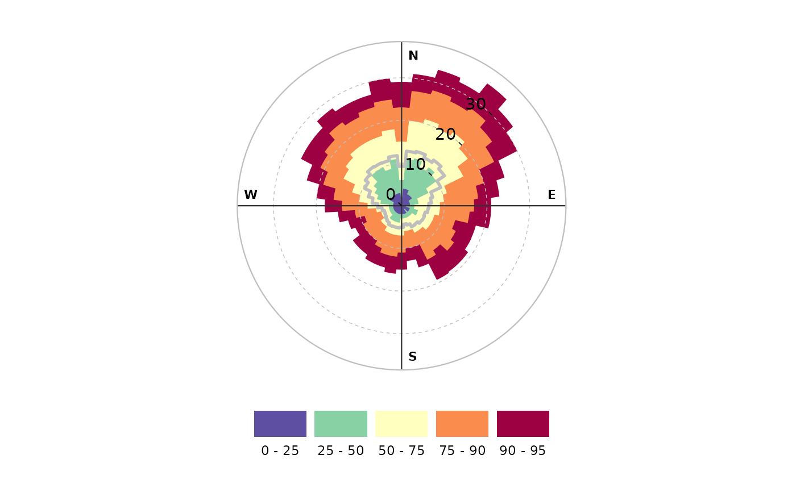
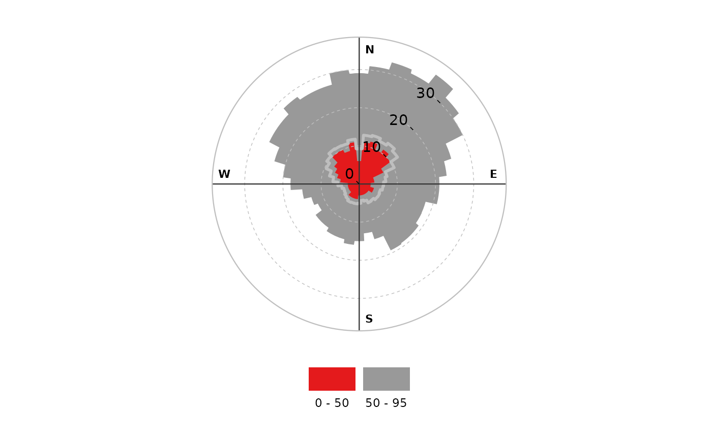

percentileRose() plots percentiles by wind direction with flexible
conditioning. The plot can display multiple percentile lines or filled areas.
Usage
percentileRose(
mydata,
pollutant = "nox",
wd = "wd",
type = "default",
percentile = c(25, 50, 75, 90, 95),
smooth = FALSE,
method = "default",
cols = "default",
angle = 10,
mean = TRUE,
mean.lty = 1,
mean.lwd = 3,
mean.col = "grey",
fill = TRUE,
intervals = NULL,
angle.scale = 45,
offset = 0,
auto.text = TRUE,
key = TRUE,
key.header = NULL,
key.footer = "percentile",
key.position = "bottom",
strip.position = "top",
plot = TRUE,
...
)Arguments
- mydata
A data frame minimally containing
wdand a numeric field to plot —pollutant.- pollutant
Mandatory. A pollutant name corresponding to a variable in a data frame should be supplied e.g.
pollutant = "nox". More than one pollutant can be supplied e.g.pollutant = c("no2", "o3")provided there is only onetype.- wd
Name of wind direction field.
- type
Character string(s) defining how data should be split/conditioned before plotting.
"default"produces a single panel using the entire dataset. Any other options will split the plot into different panels - a roughly square grid of panels if onetypeis given, or a 2D matrix of panels if twotypesare given.typeis always passed tocutData(), and can therefore be any of:A built-in type defined in
cutData()(e.g.,"season","year","weekday", etc.). For example,type = "season"will split the plot into four panels, one for each season.The name of a numeric column in
mydata, which will be split inton.levelsquantiles (defaulting to 4).The name of a character or factor column in
mydata, which will be used as-is. Commonly this could be a variable like"site"to ensure data from different monitoring sites are handled and presented separately. It could equally be any arbitrary column created by the user (e.g., whether a nearby possible pollutant source is active or not).
Most
openairplotting functions can take twotypearguments. If two are given, the first is used for the columns and the second for the rows.- percentile
The percentile value(s) to plot. Must be between 0–100. If
percentile = NAthen only a mean line will be shown.- smooth
Should the wind direction data be smoothed using a cyclic spline?
- method
When
method = "default"the supplied percentiles by wind direction are calculated. Whenmethod = "cpf"the conditional probability function (CPF) is plotted and a single (usually high) percentile level is supplied. The CPF is defined as CPF = my/ny, where my is the number of samples in the wind sector y with mixing ratios greater than the overall percentile concentration, and ny is the total number of samples in the same wind sector (see Ashbaugh et al., 1985).- cols
Colours to use for plotting. Can be a pre-set palette (e.g.,
"turbo","viridis","tol","Dark2", etc.) or a user-defined vector of R colours (e.g.,c("yellow", "green", "blue", "black")- seecolours()for a full list) or hex-codes (e.g.,c("#30123B", "#9CF649", "#7A0403")). SeeopenColours()for more details.- angle
Default angle of “spokes” is when
smooth = FALSE.- mean
Show the mean by wind direction as a line?
- mean.lty
Line type for mean line.
- mean.lwd
Line width for mean line.
- mean.col
Line colour for mean line.
- fill
Should the percentile intervals be filled (default) or should lines be drawn (
fill = FALSE).- intervals
User-supplied intervals for the scale e.g.
intervals = c(0, 10, 30, 50).- angle.scale
In radial plots (e.g.,
polarPlot()), the radial scale is drawn directly on the plot itself. While suitable defaults have been chosen, sometimes the placement of the scale may interfere with an interesting feature.angle.scalecan take any value between0and360to place the scale at a different angle, orFALSEto move it to the side of the plots.- offset
offsetcontrols the size of the 'hole' in the middle and is expressed on a scale of0to100, where0is no hole and100is a hole that takes up the entire plotting area.- auto.text
Either
TRUE(default) orFALSE. IfTRUEtitles and axis labels will automatically try and format pollutant names and units properly, e.g., by subscripting the "2" in "NO2". Passed toquickText().- key
Deprecated; please use
key.position. IfFALSE, setskey.positionto"none".- key.header
Used to control the title of the legend.
key.headerandkey.footerare now pasted together to form a single legend title. In future, they are likely to be deprecated and combined into a single argument.Used to control the title of the legend.
key.headerandkey.footerare now pasted together to form a single legend title. In future, they are likely to be deprecated and combined into a single argument.- key.position
Location where the legend is to be placed. Allowed arguments include
"top","right","bottom","left"and"none", the last of which removes the legend entirely.- strip.position
Location where the facet 'strips' are located when using
type. When onetypeis provided, can be one of"left","right","bottom"or"top". When twotypes are provided, this argument defines whether the strips are "switched" and can take either"x","y", or"both". For example,"x"will switch the 'top' strip locations to the bottom of the plot.- plot
When
openairplots are created they are automatically printed to the active graphics device.plot = FALSEdeactivates this behaviour. This may be useful when the plot data is of more interest, or the plot is required to appear later (e.g., later in a Quarto document, or to be saved to a file).- ...
Addition options are passed on to
cutData()fortypehandling. Some additional arguments are also available:xlab,ylabandmainoverride the x-axis label, y-axis label, and plot title.layoutsets the layout of facets - e.g.,layout(2, 5)will have 2 columns and 5 rows.fontsizeoverrides the overall font size of the plot.lwdoverrides the line width for percentile lines whenfill = FALSE.annotate = FALSEwill not plot the N/E/S/W labels.
Value
an openair object
Details
percentileRose() calculates percentile levels of a pollutant and plots them
by wind direction. One or more percentile levels can be calculated and these
are displayed as either filled areas or as lines.
The wind directions are rounded to the nearest 10 degrees, consistent with
surface data from the UK Met Office before a smooth is fitted. The levels by
wind direction are optionally calculated using a cyclic smooth cubic spline
using the option smooth. If smooth = FALSE then the data are shown in 10
degree sectors.
The percentileRose function compliments other similar functions including
windRose(), pollutionRose(), polarFreq() or polarPlot(). It is most
useful for showing the distribution of concentrations by wind direction and
often can reveal different sources e.g. those that only affect high
percentile concentrations such as a chimney stack.
Similar to other functions, flexible conditioning is available through the
type option. It is easy for example to consider multiple percentile values
for a pollutant by season, year and so on. See examples below.
percentileRose also offers great flexibility with the scale used and the
user has fine control over both the range, interval and colour.
References
Ashbaugh, L.L., Malm, W.C., Sadeh, W.Z., 1985. A residence time probability analysis of sulfur concentrations at ground canyon national park. Atmospheric Environment 19 (8), 1263-1270.
See also
Other polar directional analysis functions:
polarAnnulus(),
polarCluster(),
polarDiff(),
polarFreq(),
polarPlot(),
pollutionRose(),
windRose()
Examples
# basic percentile plot
percentileRose(mydata, pollutant = "o3")

# 50/95th percentiles of ozone, with different colours
percentileRose(mydata, pollutant = "o3", percentile = c(50, 95), col = "brewer1")

if (FALSE) { # \dontrun{
# percentiles of ozone by year, with different colours
percentileRose(
mydata,
type = "year",
pollutant = "o3",
col = "brewer1",
layout = c(4, 2)
)
# percentile concentrations by season and day/nighttime..
percentileRose(
mydata,
type = c("daylight", "season"),
pollutant = "o3",
col = "brewer1"
)
} # }